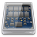

Scheduler
Dieser Artikel wurde für die folgenden Ubuntu-Versionen getestet:
Ubuntu 14.04 Trusty Tahr
Zum Verständnis dieses Artikels sind folgende Seiten hilfreich:
Hinweis:
Dieser Artikel ist Teil der Artikelserie SSD, welche das Thema Solid State Drives behandelt.
Dieser Artikel geht in allen Beschreibungen davon aus, dass die SSD als /dev/sda im System eingebunden ist. Die Befehle müssen bei davon abweichenden Systemen daher gegebenenfalls angepasst werden.
 Es gibt verschiedene Bootoptionen, die man dem Kernel beim Rechnerstart übergeben kann. Für den Einsatz von SSDs kann man ebenfalls einige dieser Optionen nutzen. So kann man zum Beispiel den I/O-Scheduler, der ein Bestandteil von Betriebssystemen ist und die zeitliche Abfolge („Scheduling“) von Lese- und Schreibaufträgen an Festplatten und andere Speichergeräte regelt, beeinflussen.
Hinweis:
Während bis einschließlich Ubuntu 12.04 der "Completely Fair Scheduler" voreingestellt ist, kommt ab Ubuntu 12.10 automatisch der "Deadline Scheduler" zum Einsatz.
I/O-Scheduler¶
Linux nutzt den Completely Fair Scheduler (CFQ). Dieser wird verwendet, um die Priorität von Programmabläufen auf Kernelebene zu verwalten und ist seit Kernel 2.6.23 im Einsatz. Allerdings ist der CFQ auf maximale Performance bei konventionellen, magnetischen Laufwerken ausgerichtet.
So kann es bei SSD in manchen Fällen beim Schreiben von großen Dateien dazu kommen, dass andere Applikationen, die ebenfalls versuchen, Dinge auf die SSD zu schreiben, so lange warten müssen, bis die große Datei fertig geschrieben wurde. Dies lässt sich sehr einfach durch einen Test des Kernels herausfinden.
Bei aktuellen SSD braucht man sich über das Setzen des besten I/O-Schedulers keine Gedanken mehr zu machen. Erkennt der Kernel die SSD als solche, verzichtet dieser auf einige Eigenarten, die bei herkömmlichen Festplatten sinnvoll waren.
Zusammenspiel Kernel und Scheduler¶
Ob der Kernel die SSD als solche erkennt, kann man sehr einfach in einem Terminal [1] überprüfen. Dazu gibt man den folgenden Befehl ein:
cat /sys/block/sda/queue/rotational
Erscheint als Ausgabe eine Null (0), so erkennt der Kernel die SSD bereits als SSD. Andernfalls können die nachfolgenden Änderungen helfen.
Art des Schedulers¶
Um zu erfahren, welche Scheduler-Optionen der Kernel nutzt, verwendet man den folgenden Befehl im Terminal:
cat /sys/block/sda/queue/scheduler
Die Ausgabe zeigt folgende Ausgabe an:
noop deadline [cfq]
Die in den eckigen Klammern stehende Option ist die zurzeit vom Betriebssystem genutzte Option. Die Optionen noop bzw. insbesondere deadline eignen sich für SSD besser. Allerdings muss man dabei auf die übrige Hardware des Rechners Rücksicht nehmen.
Exkurs - Definitionen der Scheduler¶
Die einzelnen I/O-Scheduler sind wie folgt definiert:
CFQ: Der Standard-Algorithmus der meisten Linux-Distributionen ist auf konventionelle Festplatten (HDD) zugeschnitten. CFQ versucht, die zur Verfügung stehende I/O-Bandbreite gleichmäßig zwischen allen Prozessen aufzuteilen.
NOOP: Der noop-Algorithmus versucht, so wenig Prozessorleistung wie möglich zu verbrauchen, fungiert nach dem FIFO-Prinzip und erwartet, dass der jeweilige Hardware-Conroller die einzelnen Requests bearbeitet.
Deadline: Dieser Scheduling-Algorithmus nutzt eine Warteschlange, die I/O-Requests nach Priorität sortiert, um so jedem Request in einer garantierten Zeit abarbeiten zu können.
Weitere Informationen zum I/O-Scheduler kann man im Abschnitt Links finden.
I/O-Scheduler temporär setzen¶
Man kann diese Optionen vorerst nur temporär (bis zum nächsten Neustart) ausprobieren und parallel Geschwindigkeitstests (siehe Festplatten-Geschwindigkeitstest) durchführen. Im Terminal gibt man dazu einen der folgenden Befehle ein:
Für die Option
deadline:echo deadline | sudo tee /sys/block/sda/queue/scheduler
Für die Option
noop:echo noop | sudo tee /sys/block/sda/queue/scheduler
Für die Option
cfq:echo cfq | sudo tee /sys/block/sda/queue/scheduler
Nach jedem Wechsel des Schedulers sollte man nun ein paar Geschwindigkeitstests durchführen (nicht nur einen, um das Ergebnis nicht zu verfälschen). Was man im Regelfall sofort erkennen kann, ist, dass die Optionen noop und deadline schneller als der Standard cfq sind. Ob dann noop oder deadline zum Einsatz kommen, hängt von persönlichen Vorlieben und der eingesetzten Hardware ab.
Scheduler dauerhaft setzen¶
Hinweis:
Wird im Rechner nur eine SSD eingesetzt, empfiehlt sich die Verwendung einer Bootoption. Nutzt man hingegen einen Mix aus konventionellen Festplatten (HDD) und einer SSD, sollte man entweder sysfsutils oder das Virtuelle Dateisystem nutzen.
Man kann den I/O-Scheduler auf die Optionen noop oder deadline setzen, wenn man nur eine Festplatte in Betrieb hat, dies eine SSD ist und externe Laufwerke gelegentlich nutzt (gilt auch für USB-Sticks).
GRUB 2¶
Nutzt man GRUB 2 (Standard ab Ubuntu 9.10), fügt man in /etc/default/grub (Zeile: GRUB_CMDLINE_LINUX) die Bootoption elevator=noop oder elevator=deadline hinzu, so dass es wie folgt aussieht:
GRUB_CMDLINE_LINUX="elevator=noop"
bzw.
GRUB_CMDLINE_LINUX="elevator=deadline"
Danach darf man nicht vergessen, die Änderungen mit folgendem Befehl zu aktivieren:
sudo update-grub
GRUB¶
Nutzt man noch GRUB statt GRUB 2, fügt man die Bootoption elevator=noop oder elevator=deadline in der Datei /boot/grub/menu.lst ein, so dass es beispielsweise wie folgt aussieht:
kernel /vmlinuz26 root=/dev/sda3 ro elevator=noop
bzw.
kernel /vmlinuz26 root=/dev/sda3 ro elevator=deadline
Im Gegensatz zu GRUB 2 muss hier die Änderung nicht zuerst aktiviert werden - ein Neustart des Rechners reicht aus.
Sysfsutils¶
Hat man dagegen mehrere Festplatten bzew. einen Mix aus HDD und SSD, sollte man das Paket sysfsutils installieren und die folgende Zeile in /etc/sysfs.conf eintragen:
block/sda/queue/scheduler = noop
Nach einem Neustart sind die Änderungen dauerhaft aktiv.
rc.local¶
Möchte man keine Bootoptionen setzen, kann man alternativ in einem Editor mit Rootrechten auch einen Eintrag in /etc/rc.local setzen, welche im Normalfall leer ist. Vor der Zeile
exit 0
trägt man ein:
Für die Option
noop:echo noop > /sys/block/sda/queue/scheduler
Für die Option
deadline:echo deadline > /sys/block/sda/queue/scheduler
Für die Option
cfq:echo cfq > /sys/block/sda/queue/scheduler
Des Weiteren kann man mit dem sogenannten fifo_batch experimentieren. Anwender berichten teilweise von einem weiteren Performancezuwachs. Dazu trägt man folgende Zeile ebenfalls in /etc/rc.local ein:
echo 1 > /sys/block/sda/queue/iosched/fifo_batch
Die I/O-Requests werden dabei in „Batches“ gruppiert. Diesem Batch (sequentielle Bearbeitung von Aufgaben – siehe Stapelverarbeitung) wird der Wert 1 zugewiesen. Dies bewirkt eine sehr niedrige Latenz und erzeugt ein „first-come first-served“ Verhalten (siehe First In – First Out) des Schedulers.
Links¶
Informationen zum Scheduler:
linuxhowtos.org: Information on how to change the I/O scheduler at runtime

Changing Your Linux I/O Scheduler
- Blogbeitrag, 11/2010Choosing an I/O Scheduler...
- Red Hat Magazine, 06/2005SSD benchmark of I/O schedulers
- ubuntuforums.orgDeadline IO scheduler tunables
- Kernel-Dokumentation zu fifo_batchUbuntu: Desktop tuning mit elevator=deadline
 - Blogbeitrag, 11/2010
- Blogbeitrag, 11/2010Linux I/O Scheduler
- Beitrag in der ThomasKrenn Wiki
- Erstellt mit Inyoka
-
 2004 – 2017 ubuntuusers.de • Einige Rechte vorbehalten
2004 – 2017 ubuntuusers.de • Einige Rechte vorbehalten
Lizenz • Kontakt • Datenschutz • Impressum • Serverstatus -
Serverhousing gespendet von